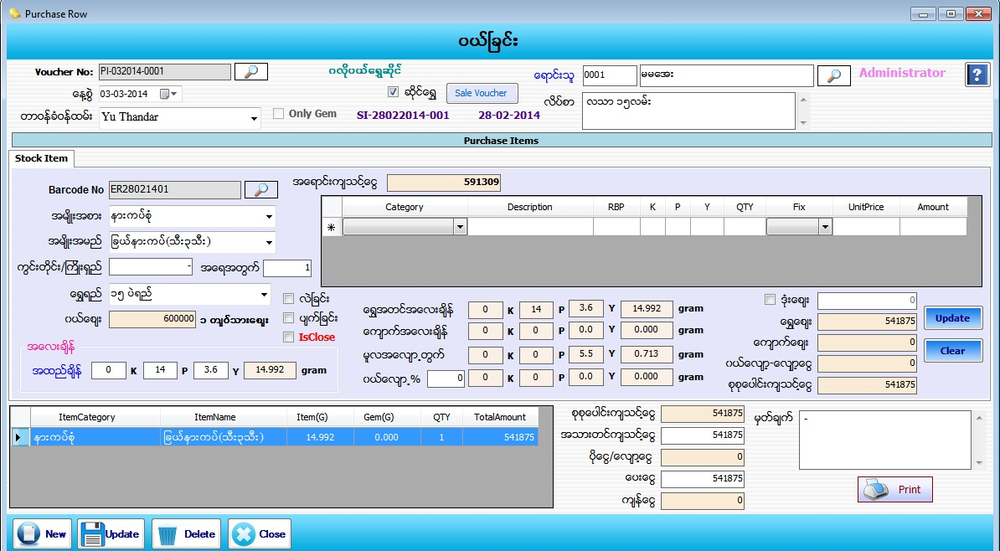

Purchase Raw For Gold Shop Setup
PurchaseRaw
PurchaseRaw(GoldShop)
PurchaseRaw(Gems)

- Purchase Raw Material Item တြင္ ဆိုင္ေရႊ အတြက္ျဖစ္ပါက ဆိုင္ေရႊ check box တြင္ အမွန္ျခစ္ ျခစ္ေပးပါက ဆိုင္ေရႊအတြက္ Form ေပၚလာပါလိမ့္မည္။
- Voucher No သည္ software မွ Auto တပ္ေပးပါမည္။
- ေန႕စြဲတြင္ လက္ရွိေရာက္ေနေသာ Date ကိုျပေပးမည္ ျဖစ္သည္။
- တာဝန္ခံ ဝန္ထမ္းကို ေရြးခ်ယ္ပါ။
- Sale Voucher button ကို ႏွိပ္လိုက္ပါက Order Voucher ႏွင့္ Sale Voucher မ်ားေပၚလာပါမည္။ ၿပန္လည္ ဝယ္ယူမည့္ Voucher ကိုေရြးခ်ယ္ပါ။ ဆိုင္တြင္ ေအာ္ဒါလုပ္ထားေသာ Order Voucher မ်ားကိုလည္း ျပန္လည္ဝယ္ယူ ႏိုင္ပါသည္။
- Barcode No ေဘးရွိမွန္ဘီလူးကိုႏွိပ္ကာ ၿပန္လည္ဝယ္ယူမည့္ဘားကုတ္နံပါတ္ကို ေရြးခ်ယ္ေပးရပါမည္။ ေရႊရည္တြင္ က်ပ္သားခ်ိန္ကို ေရြးထားပါက အထည္ခ်ိန္ သတ္မွတ္ရာတြင္ K/P/Y ကိုသာရိုက္ထည့္ႏိုင္မည္ျဖစ္ျပီး Gram ခ်ိန္ေရြးထားပါကgram အေလးခ်ိန္ ကိုသာ ရိုက္ထည့္ႏိုင္မည္ျဖစ္သည္။
- ၿပန္လည္ဝယ္ယူမည့္ဘားကုတ္တြင္ေက်ာက္ခ်ိန္ပါရွိပါက ေဘးရွိ ဇယားကြက္တြင္ ပါဝင္ေသာေက်ာက္ မ်ား ကိုေတြ႔ၿမင္ရပါမည္။ အထည္ခ်ိန္မွ ေက်ာက္အေလးခ်ိန္ကို ႏွဳတ္လိုက္ပါက ေရႊ အတင္အေလးခ်ိန္ကို Auto ျပေပးပါလိမ့္မည္။
- ဝယ္ေစ်းသည္ ေစ်းသတ္မွတ္ၿခင္း (Master Setup -> Current Price) တြင္သတ္မွတ္ခဲ့ေသာေစ်းမ်ားထဲမွ ေနာက္ဆံုးေန႔စဲြအခ်ိန္၏ ဝယ္ေစ်းကိုၿပေပး ၿခင္းၿဖစ္ပါသည္။ လဲေစ်းကိုအမွန္ၿခစ္လွ်င္ ေစ်းသတ္မွတ္ၿခင္းတြင္သတ္မွတ္ခဲ့ေသာ လဲေစ်းႏွဳန္း(သို႔)ရာခိုင္ႏွဳန္းက် လာပါမည္။ ပ်က္ေစ်းကိုအမွန္ၿခစ္လွ်င္ ေစ်းသတ္မွတ္ၿခင္းတြင္သတ္မွတ္ခဲ့ေသာ ရာခိုင္ႏွဳန္းက်လာပါမည္။ ဝယ္ေစ်း၊လဲေစ်း၊ပ်က္ေစ်း တို႔ကို ရာခိုင္ႏွဳန္းမ်ားသတ္မွတ္ထားခဲ့လွ်င္ ေပါက္ေစ်း(ေရာင္းေစ်း)ကို ေရႊခ်ိန္ၿဖင့္ေစ်း တြက္ၿပီး သတ္မွတ္ထားေသာရာခိုင္ႏွဳန္းကိုေလ်ာ့လိုက္မည္ၿဖစ္ပါသည္။
- ဒံုးေစ်းကိုအမွန္ၿခစ္ထားၿပီးေစ်းတစ္ခုၿဖတ္ကာၿပန္လည္ဝယ္ယူႏိုင္ပါသည္။အကယ္၍ ဝယ္ေစ်း၊လဲေစ်း၊ပ်က္ေစ်း မ်ားသည္ ရာခိုင္ႏွဳန္းၿဖစ္ေနပါက Barcode No ေဘးရွိ အေရာင္းက်သင့္ေငြကို ရာခိုင္ႏွဳန္းေလွ်ာ့ၿပီးသားတန္ဖိုးကို ဒံုးေစ်းအကြက္တြင္ေတြ႔ၿမင္ရပါမည္။
- ဒံုးေစ်း ကိုအမွန္ၿခစ္ မၿခစ္ထားလွ်င္ ဝယ္ေစ်းသည္ႏွဳန္းၿဖစ္ေနပါက ေရႊအတင္အေလးခ်ိန္ႏွင့္ေစ်းတြက္ေပးပါမည္။ ဝယ္ေစ်း(သို႔)လဲေစ်း(သို႔)ပ်က္ေစ်းတို႔သည္ ရာခိုင္ႏွဳန္းမ်ားသတ္မွတ္ထားပါက လက္ရွိေနာက္ဆံုးေပါက္ေစ်း(ေရာင္းေစ်း)ကိုရာခိုင္ႏွဳန္းေလွ်ာ့ၿပီးသားတန္ဖိုးအားေရႊေစ်းတြင္ၿမင္ႏိုင္ပါသည္။
- ဝယ္ေလ်ာ့(%) သည္ Customer အားေရာင္းတုန္းကယူေသာအေလ်ာ့ကို ထိုCustomerအား(%)တြက္ၿပီး အပိုေဆာင္းၿပန္လည္ေပးၿခင္းၿဖစ္ပါသည္။ ထုိဝယ္ေလ်ာ့(%)သည္ ထည့္လဲရသလို၊မထည့္ရင္လဲရပါသည္။
- ထုိ႕ေနာက္ Add Buttonႏွိပ္ျပီး Dataမ်ားျဖည္႕သြင္းေပးရမည္။
- Add လုပ္ျပီးသား ပစၥည္းတစ္ခုအားျပန္လည္ျပင္ဆင္လုိပါက ေအာက္မွ Grid မွ မိမိျပင္ဆင္လုိေသာ Row ၏ ေရွ႕ဆံုးကိုနွိပ္ပါက သက္ဆိုင္ရာ Row ၏ Data မ်ားကို အေပၚတြင္ျပန္လည္ျပင္ဆင္နုိင္မည္ျဖစ္သည္။ျပီးေနာက္ Update Button အားနွိပ္ပါ။
- အသားတင္က်သင့္ေငြ၊ ေပးေငြ၊ မွတ္ခ်က္ တြင္ ျဖည့္စြက္ပါ။ စုစုေပါင္းက်သင့္ေငြ၊ ပိုေငြ-ေလွ်ာ့ေငြ၊ က်န္ေငြ တို႕တြင္ Software မွ Auto က်ေပးမည္ ျဖစ္သည္။
- Data မ်ားျဖည့္စြက္ျပီးပါက Save Button ကိုႏွိပ္၍ သိမ္းဆည္းႏိုင္ပါသည္။ Purchase Invoice Voucher ထုတ္လိုလွ်င္ Print Button ကိုႏွိပ္၍ Voucher ထုတ္ႏုိင္ပါသည္။
- သိမ္းဆည္းၿပီးသား Data မ်ားအား ၿပန္လည္ၾကည့္ၿခင္း၊ ၿပင္ဆင္ၿခင္းမ်ားၿပဳလုပ္ခ်င္ပါက Voucher No ၏ ေဘးတြင္ ရွိေသာ မွန္ဘီလူး button ကိုႏိွပ္ၿပီးၿပန္လည္ၾကည့္ရွဳၿပင္ဆင္ခ်င္ေသာ Purchase Item အား ေရြးခ်ယ္ ၿပီးၿပင္ႏိုင္ ပါသည္။
- သိမ္းဆည္းၿပီးသား ထည့္ျပီးသား Data မ်ားကို ဖ်က္လိုလွ်င္ မွန္ဘီလူး button အားႏိွပ္ၿပီးရွာပါ။ ထို႕ေနာက္ မိမိဖ်က္္လိုေသာ Data ကို Delete Button ကိုႏွိပ္၍ ဖ်က္ႏိုင္ပါသည္။
- Purchase Itemအသစ္ထည္႕လိုပါက New Button ကိုႏွိပ္ျပီး အသစ္ထည့္ႏိုင္ပါသည္။
- Purchase Raw Material Item Form အား အသံုးျပဳျပီးပါက Close Button ကိုႏွိပ္၍ ပိတ္ႏိုင္ပါသည္။